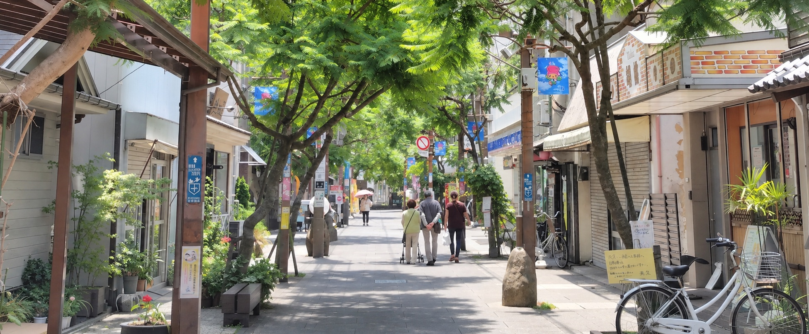

一緒に、地域の魅力を育てませんか？
いつもの景色、お店のこだわり、地域で続く活動。一人ひとりが知っている魅力を持ち寄り、谷津干潟と周辺地域のことを一緒に伝えていきませんか。
谷津干潟ナビでは、地域の皆さまや団体、クリエイターの皆さまとつながる協力パートナーを募集しています。情報を教えていただくことや、交流から始まる関わりも歓迎します。

谷津干潟ナビが目指していること
谷津干潟ナビは、谷津干潟と周辺地域の自然・人・店舗・活動などの魅力を発信する、個人運営の地域情報サイトです。情報を届けることを通じて、地域の人と人、訪れる人と地域がつながるきっかけを作りたいと考えています。
地域のことをよく知る方、それぞれの得意な表現で魅力を伝える方、日々の活動を支える方。皆さまと交流しながら、地域の魅力を一緒に見つけ、育てていきたいと思っています。
谷津干潟ナビは非公式の地域情報サイトです。この募集は当サイトとの協力についてのご案内であり、習志野市や谷津干潟自然観察センターの公式な制度ではありません。
こんな方とつながりたい
地域のお店や事業者、地域活動に取り組む方、写真・イラスト・文章などで表現する方、自然保護や教育・文化活動に関わる方など、さまざまな皆さまとつながりたいと考えています。
個人・団体、プロ・アマチュアを問わず、学生の方も歓迎します。谷津干潟や周辺地域への思い、お好きなことや得意なことを、気軽にお聞かせください。
一緒にできること
地域の情報を持ち寄ったり、取材や作品づくりをご一緒したり。お互いの得意なことや関心を生かしながら、できることを一緒に考えていきたいと思っています。
- 地域の魅力を見つける
- 地域の見どころや、お店・人・活動についての情報を持ち寄り、紹介したい魅力を一緒に見つけること。
- 取材を通じて伝える
- お店や活動の現場でお話を伺い、そこにある思いや取り組みを、取材を通じて一緒に伝えること。
- 写真や作品で表現する
- 写真やイラスト、文章、作品など、それぞれの表現で地域の魅力を届けること。作品の掲載をご一緒する際は、使用する範囲やお名前の表記を事前にご相談します。
- 活動やイベントの情報共有
- 地域活動やイベントの予定、取り組みの様子を共有し、参加や交流のきっかけを作ること。
- 共同企画・コンテンツ制作
- 地域を紹介する企画を一緒に考えたり、記事や作品などを一緒に作ったりすること。
このほかのアイデアも、ぜひお聞かせください。
参加にあたって
パートナーは原則として無料・有料で区分せず、金銭的な協力を参加条件にはしていません。情報提供や交流だけでも歓迎します。
関わり方や発信する内容は、個別にご相談して決めていきます。
パートナーになるメリット
一緒に取り組む中で、次のような機会を作っていきたいと考えています。
- 協力パートナーとして、サイトでお名前やロゴをご紹介
- 自分たちの活動や作品を、地域の人に知ってもらうきっかけになる
- 地域の人との新しいつながりが生まれる
- それぞれの視点や得意なことを生かして、地域の魅力を一緒に発信できる
- 関心のあるテーマで、谷津干潟ナビの企画に参加できる
お問い合わせ
「こんな情報を持っています」「写真で協力してみたい」「一緒に企画を考えたい」など、まずはお考えをお聞かせください。具体的な内容が決まっていなくても大丈夫です。
お問い合わせフォームに「協力パートナーについて」と書き、次の内容をわかる範囲でお知らせください。
- お名前、または店舗・団体・活動名
- 普段の活動や、谷津干潟・周辺地域との関わり
- 興味のあること、協力してみたいこと
- WebサイトやSNS、作品を紹介するページのURL（あれば）
いただいた内容を確認し、メールでお返事します。お互いにできることや、ご一緒できそうなことを相談していきましょう。